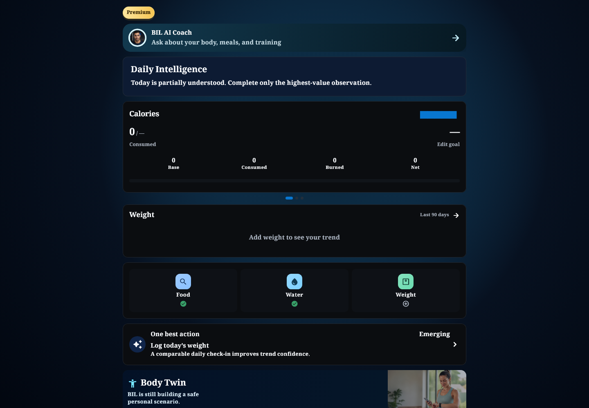
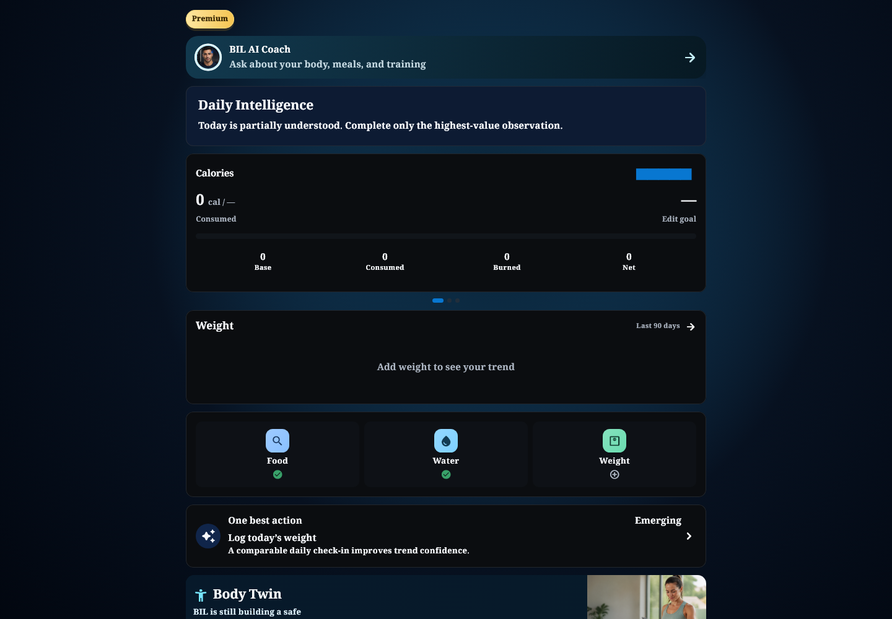
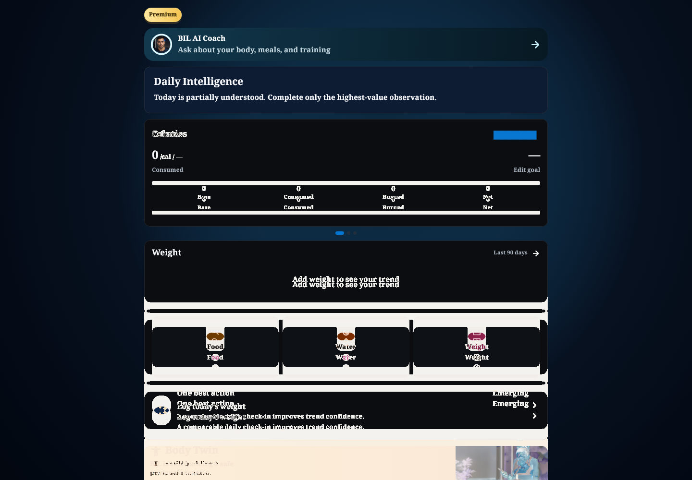

التصنيف المقترح: B. Desktop1440: وحدةcal والعرض الموثق للشريط/صفوفFood-Water-Weight وأبعادDiscover تغيّرت تاريخيًا؛ لاAhem. هذهHome محمية ويجب تأكيد اعتماد التغييرات السابقة فرديًا.
NotoNaskhArabic + loaded fallback
Baseline test/goldens/premium_dashboard_desktop_after.png, commit c893df0ae37098bf574a298e88698ff52ecfdb8b
Source: lib/features/dashboard/widgets/dashboard_reference_goal_components.dart
HOLD RED; main QA approves this exact pair individually. A: replace invalid font evidence only after signoff; B: verify intended source history and approve or reclassify C.
Same pixels as previous failed actual: True. Master unchanged, no approval.



